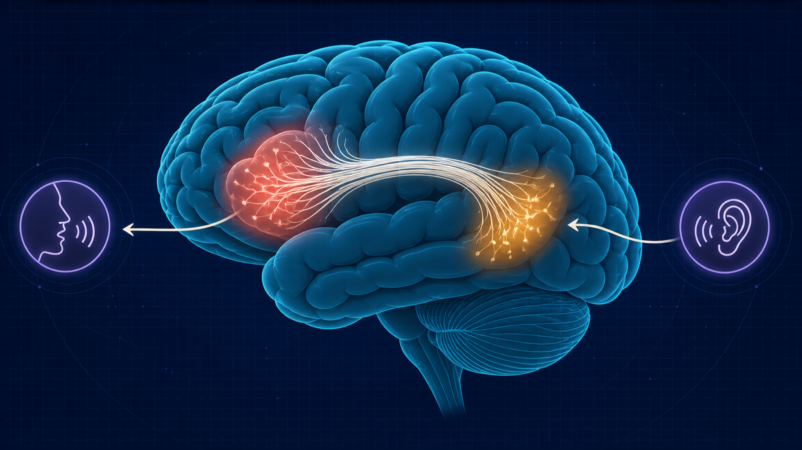
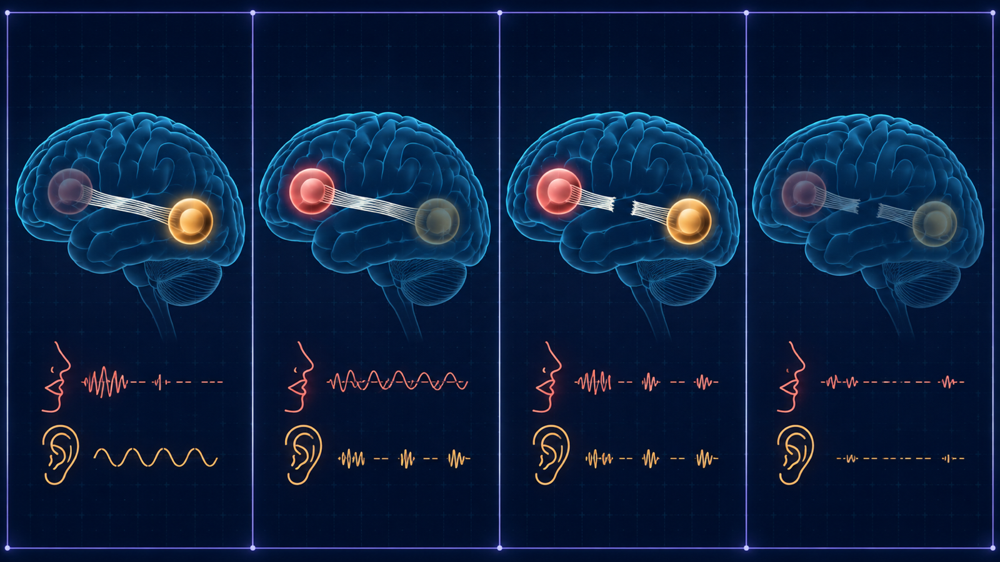
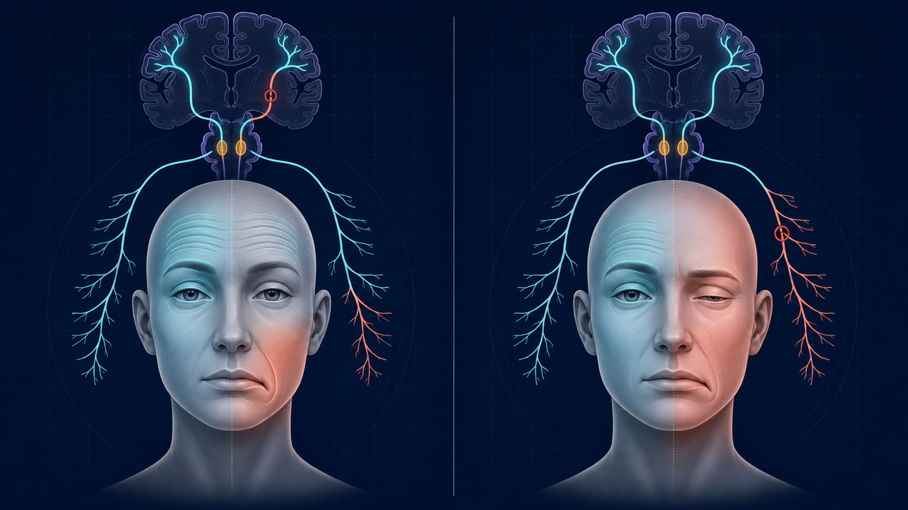
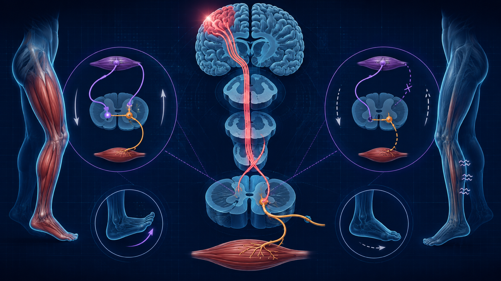
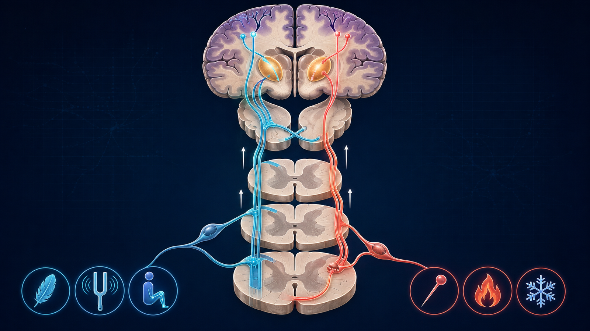
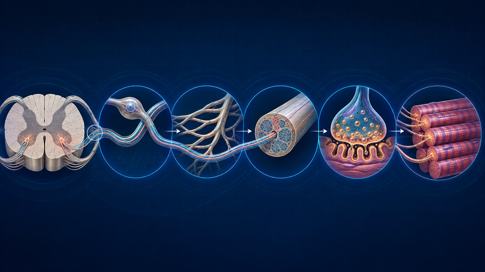
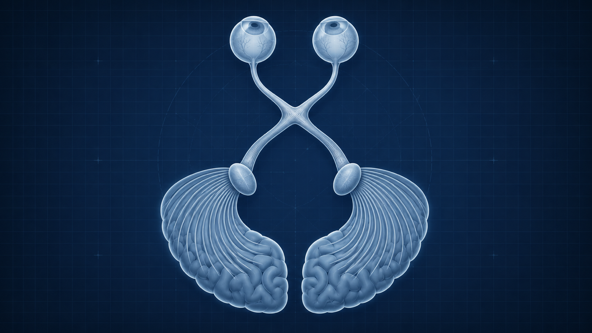
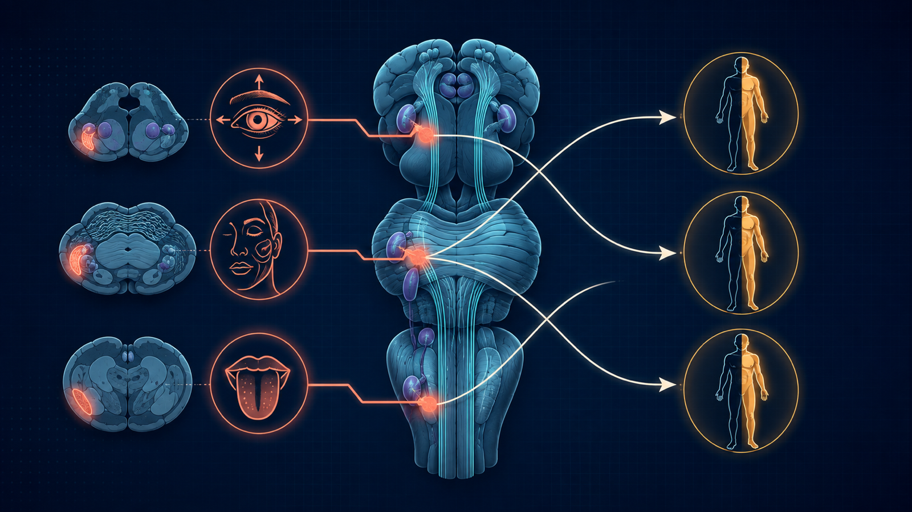
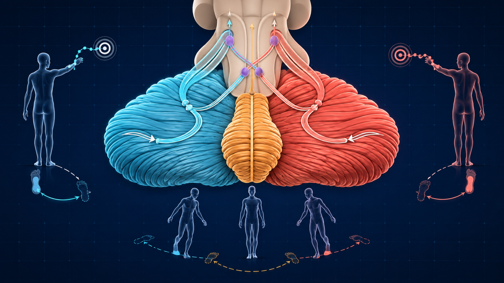
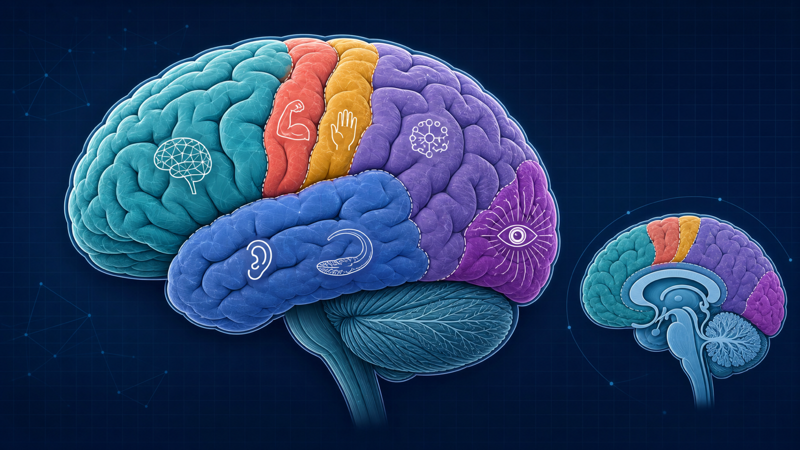

Preparar
Segurança, consentimento, idioma, lateralidade, dispositivos e observação espontânea.
Um método reproduzível para transformar achados em síndrome, lado e nível anatômico — do córtex ao músculo — sem decorar listas soltas.
Adultos · ensino e simulação · nenhum dado de paciente é solicitado ou transmitido · revisão de fontes realizada em 05/09/2026.
Ação: interrompa o treino, estabilize ABC, verifique glicemia e sinais vitais e ative a via institucional apropriada. Um exame normal ou NIHSS baixo não exclui AVC de circulação posterior.
Escolha o nível que explica o maior número de achados com o menor número de lesões. Depois procure um achado que possa refutar sua hipótese.
ABC, glicemia, consciência e início/último momento bem. Súbito favorece vascular, crise ou trauma; o tempo orienta etiologia, mas não substitui a topografia.
Afasia, negligência, apraxia, agnosia, crise focal ou extinção apontam para hemisfério/rede cortical.
Mapeie distribuição e densidade. Déficit puro e proporcional sem sinal cortical sugere subcórtex; predomínios ajudam a ler o homúnculo.
Par craniano ipsilateral com trato longo contralateral é tronco até melhor explicação.
Espasticidade/hiperreflexia/Babinski versus atrofia/fasciculação/hiporreflexia. Na fase aguda, sinais podem ainda não estar completos.
Nível sensitivo e esfíncter sugerem medula; dermátomo/miótomo sugere raiz; nervo nomeado sugere mononeuropatia.
Dismetria/ataxia localizam cerebelo/conexões; fatigabilidade sem sensitivo sugere junção; proximal simétrico sugere músculo.
Faça um rastreio consistente; aprofunde o componente alterado. Compare lados, descreva o achado e só depois interprete.
Segurança, consentimento, idioma, lateralidade, dispositivos e observação espontânea.
Consciência, atenção, memória, linguagem, praxis, gnosia e negligência.
Testar de forma agrupada e dirigida, sem manobras contraindicadas.
Trofismo, movimentos, drift, tônus, força e distribuição.
Profundos, plantar e clônus, sempre comparativos e contextualizados.
Modalidades primárias, padrão, nível e funções corticais sensitivas.
Separar ataxia cerebelar, sensitiva, vestibular e limitação motora.
Tempo + síndrome + lado + nível + evidências a favor/contra + próximo teste.
“Déficit de início [tempo], configurando síndrome [motor/sensitivo/cortical/etc.], lateralizada para [lado], mais compatível com lesão em [nível/local], sustentada por [achados] e com [achados contrários/ausentes]. Prioridade: [urgência]. Próximo passo confirmatório: [exame].”
Fala espontânea/fluência → compreensão → nomeação → repetição → leitura → escrita. Confirme visão, audição, consciência e capacidade motora.


| Padrão | Fluência | Compreensão | Repetição | Pista topográfica |
|---|
A distribuição facial orienta, mas o contexto e os sinais associados impedem o erro perigoso.

Em estudo de 2025, fraqueza facial superior foi observada em parte relevante dos pacientes com paresia central por AVC, geralmente menos intensa que a inferior. Portanto, envolvimento da testa não exclui lesão central; diplopia, nistagmo, ataxia, déficit de membro ou alteração cortical mudam imediatamente a localização e a urgência.
| Achado | Central hemisférica típica | Nuclear/periférica típica | Armadilha |
|---|---|---|---|
| Testa | Relativamente poupada ou menos fraca | Fraca no lado da lesão | Poupança não é universal no AVC |
| Fechamento ocular | Relativamente preservado | Incompleto/fraco; risco corneano | AVC grave também pode enfraquecer parte superior |
| Boca | Fraqueza inferior contralateral | Fraqueza ipsilateral | Compare ativação voluntária e emocional |
| Sinais associados | Face-braço-perna, linguagem, negligência | Gosto, hiperacusia, lacrimejamento, otalgia | Ponte causa face periférica + sinais cruzados |
Um único nervo pode ser periférico; múltiplos pares com tratos longos sugerem tronco, base do crânio, seio cavernoso ou meninges conforme o conjunto.
Teste apenas se indicado, uma narina por vez e com odor familiar não irritante. Anosmia pode ser nasal, frontal basal, traumática ou neurodegenerativa.
Acuidade monocular, cores quando indicado, campos, fundo e aferência pupilar. Perda monocular é pré-quiasmática; defeito homônimo é retroquiasmático.
Inspecione ptose, anisocoria e posição primária; teste reação direta/consensual, versões, sacadas, perseguição e diplopia. Uma paresia dolorosa do III com pupila alterada exige investigação vascular urgente.
V: toque/dor em V1–V3, mastigação e mandíbula; córneo-palpebral aferente V1 quando indicado. VII: repouso, testa, olhos, sorriso e bochechas; córneo-palpebral eferente VII.
Déficit de face completo com sinais cruzados pode estar no núcleo/fascículo do VII na ponte, mesmo parecendo “periférico”.
Rastreie cada ouvido, depois Rinne/Weber se houver assimetria. Observe nistagmo, skew, impulso cefálico e marcha conforme o cenário. HINTS não é triagem genérica: requer síndrome vestibular aguda contínua, examinador treinado e técnica correta.
Ouça voz e tosse, observe secreções e palato. Disfonia, tosse fraca e disfagia podem localizar bulbo, nervos, junção ou músculo. Reflexo nauseoso ausente isoladamente é pouco específico; não ofereça líquido se houver risco de aspiração.
XI: girar a cabeça e elevar ombros contra resistência. XII: bulk/fasciculações, protrusão e força lateral. Lesão periférica desvia a língua para o lado fraco; lesão supranuclear pode produzir padrão contralateral, geralmente sem atrofia.
Fraqueza deve ser descrita por distribuição, tônus, reflexos, sensibilidade e músculos acompanhantes.



| Nível | Distribuição | Tônus/reflexos | Sensitivo | Pista forte |
|---|---|---|---|---|
| NMS | Padrão piramidal, hemicorpo ou abaixo do nível | Espasticidade, hiperreflexia, clônus; podem faltar no início | Variável | Babinski +, perda de destreza, pronator drift |
| Corno anterior/NMI | Miotômico ou segmentar | Hipotonia/hiporreflexia | Preservado no corno anterior | Atrofia e fasciculações |
| Raiz | Miótomo; dor em dermátomo | Reflexo da raiz reduzido | Dermatomal, frequentemente incompleto | Dor radicular/paravertebral |
| Plexo | Mais de um nervo e mais de uma raiz | Reflexos conforme troncos/fascículos | Patchy | Não cabe em um único nervo |
| Nervo | Território motor do nervo | Reflexo relacionado pode cair | Território cutâneo do nervo | Músculos poupados separam raiz de nervo |
| Junção | Ocular/bulbar ou proximal, flutuante | Geralmente preservados; LEMS é exceção | Preservado | Fatigabilidade e facilitação |
| Músculo | Proximal e simétrico em muitos quadros | Preservados até fraqueza avançada | Preservado | Dificuldade para levantar/subir/elevar braços |
Vibração, propriocepção e tato discriminativo. Ataxia sensitiva piora ao fechar os olhos; lesão medular causa perda ipsilateral abaixo do nível antes do cruzamento bulbar.
Dor e temperatura. Cruza na medula, usualmente alguns segmentos após a entrada; lesão lateral causa perda contralateral abaixo do nível.
Extinção, astereognosia e agrafestesia exigem sensibilidade primária suficiente e compreensão da tarefa; sugerem rede parietal contralateral.
Teste cada olho por confrontação, compare quadrantes e diferencie perda monocular de defeito homônimo.

O lado do par craniano ajuda a nomear o lado do tronco; o membro pode estar comprometido do lado oposto.


III par, pupilas, movimentos verticais, pedúnculos e tremor/ataxia. III ipsilateral + hemiparesia contralateral é um padrão cruzado clássico.
V–VIII, olhar horizontal e vias longas. Face completa ipsilateral + hemiparesia contralateral não é Bell isolada.
IX–XII, voz/deglutição, língua, Horner, ataxia e vias sensitivas/motoras. Vigie proteção de via aérea e ventilação.
Dismetria, decomposição, rebote, tremor de intenção, fala escandida e ataxia. Fraqueza, perda proprioceptiva e vertigem podem falsear testes.
Diagramas conceituais gerados para o projeto. Não são exames reais, não contêm dados de pacientes e não devem ser usados como referência anatômica única.

Escolha primeiro o nível anatômico. O feedback explica a pista localizadora e a principal armadilha.
Referências consultadas para técnica, localização, linguagem, face, via óptica e sinais de emergência. Acesso verificado em 05/09/2026.
A prévia pública permite estudo e crítica. Uso como material institucional exige revisão assinada e adaptação local.
Validar exame, lateralização, linguagem, face, tronco, medula e casos.
Revisar tarefas em português, vieses culturais, afasia, disartria e apraxia.
Cronometrar OSCE, testar documentação e calibrar feedback dos casos.
Registrar versão, data, responsáveis e fluxos locais de emergência.